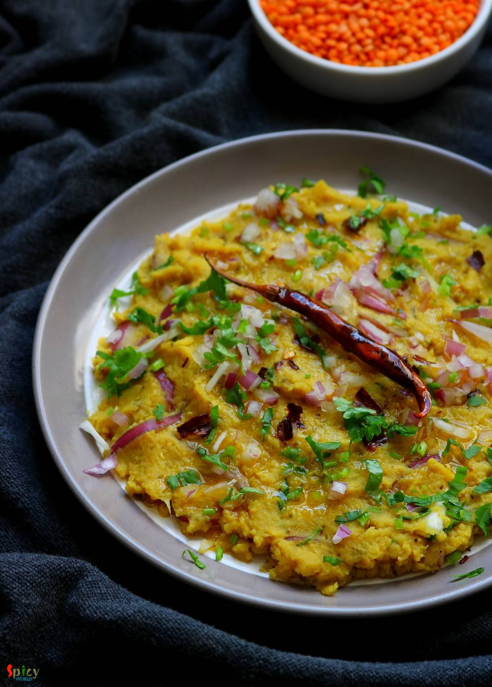

Simple and Easy Recipes
Musur Daaler Bhorta / Spicy mashed Lentils
© 2016 Spicy World, Published on: May 21, 2019
Musur Daaler Bhorta is traditional Bengali recipe. Bhorta / Bharta means mashed, it can be vegetables, chicken or lentils. In this recipe we will mash the boiled orange lentils with onion, mustard oil, fried red chilies and garlic. It tastes best with steamed rice and few drops of lemon juice. During summer Musur Daaler Bhorta is a must have. Try this easy recipe in your kitchen and let me know how it turned out for you.

Ingredients
- Half cup of musur daal or small orange lentils.
- Half Teaspoon of turmeric powder.
- 2 Teaspoons of salt.
- 1 small onion, thinly sliced.
- 2-3 dry red chilies.
- Some chopped coriander leaves.
- 2 cloves of garlic.
- Half cup of mustard oil.
- 1 cup of water.


Steps
Wash the lentils very well with water for 2-3 times.
Discard the dirty water.
Boil the lentils with water and turmeric powder.
Whisk the boiled lentils for 1 minute to make it little smooth.
Then again cook on high heat for 5-7 minutes to make it semi dry.
In another pan, heat 3 Tablespoons of mustard oil.
Fry dry red chilies and garlic for 3-4 minutes on medium flame.
Take them out along with the oil in a plate.
Discard the tail of the chilies.
Mash them first with your hand.
Then add onion slices and salt, mash again.
Then add mustard oil and dried lentils. Mix well.
Lastly add chopped coriander leaves. While serving add some Lemon juice on top.
Your musur daaler bhorta is ready to serve.
Serve this hot with steamed rice ...
")